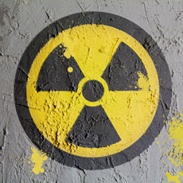

CHERNOBLY
 El accidente de Chernóbil fue una combinación de un mal diseño de la central nuclear, que además no disponía de un recinto de contención, junto con los errores producidos por los operadores de la misma.La falta de una “cultura de seguridad”, consecuencia a su vez de la falta de un régimen político y social democrático en la Unión Soviética, está en la raíz del accidente de Chernóbil.
El accidente de Chernóbil fue una combinación de un mal diseño de la central nuclear, que además no disponía de un recinto de contención, junto con los errores producidos por los operadores de la misma.La falta de una “cultura de seguridad”, consecuencia a su vez de la falta de un régimen político y social democrático en la Unión Soviética, está en la raíz del accidente de Chernóbil.
El accidente de Chernóbil fue una combinación de un mal diseño de la central nuclear, que además no disponía de un recinto de contención, junto con los errores producidos por los operadores de la misma, dejando fuera de servicio voluntariamente varios sistemas de seguridad con el fin de realizar un experimento, en el marco de un sistema en el que el entrenamiento era escaso, y en el que no existía un organismo regulador independiente. La Unión Soviética no tenía un sistema independiente de inspección y evaluación de la seguridad de las instalaciones nucleares, es decir, un organismo regulador, como en los países occidentales. El diseño de un reactor del tipo RBMK no hubiera sido nunca autorizado en los países occidentales. De hecho, nunca se ha construido un reactor de este diseño fuera de la antigua Unión Soviética.
Los bomberos intentaron apagar una serie de llamaradas en la central, y eventualmente, los helicópteros arrojaron arena y otros materiales en un intento de sofocar el incendio y contener la contaminación. A pesar de la muerte de dos personas en las explosiones, la hospitalización de trabajadores y bomberos, y el peligro de lluvia nuclear y fuego, no hubo evacuados en las zonas circundantes (ni siquiera en la ciudad cercana de Prípiat, que fue construida en la década de los 70 para alojar a los trabajadores de la central) hasta 36 horas después del comienzo del desastre,Se consideró que la divulgación del accidente nuclear fue un riesgo político importante, pero para entonces ya era demasiado tarde: el colapso ya había propagado la radiación hasta Suecia, en donde las autoridades de otra central nuclear comenzaron a preguntarse qué ocurría en la URSS. Luego de haberlo negado, el 28 de abril, los soviéticos anunciaron brevemente el accidente,
El mundo se dio cuenta enseguida de que estaba presenciando un evento histórico. Hasta el 30 por ciento de las 190 toneladas métricas de uranio de Chernóbil se encontraba ahora en la atmósfera, y la URSS finalmente evacuó a 335.000 personas, y fijó una “zona de exclusión” de 30 kilómetros alrededor del reactor. En principio, hubo 28 muertos tras el accidente, mientras que más de 100 resultaron heridos. El Comité Científico de las Naciones Unidas para el Estudio de los Efectos de las Radiaciones Atómicas ha informado que más de 6000 niños y adolescentes desarrollaron cáncer de tiroides tras la exposición a la radiación por el incidente; sin embargo, algunos expertos han cuestionado esta afirmación.
 Los efectos del accidente de Chernóbil han sido evaluados por organismos internacionales, fundamentalmente el OIEA y la Organización Mundial de la Salud, que han hecho públicos los resultados de su investigación y que se resumen a continuación: Según el informe de la Organización Mundial de la Salud “Chernóbil, la verdadera escala del accidente” realizado a mediados de 2005, no llegan a 50 las defunciones atribuidas directamente a la radiación liberada por el accidente de Chernóbil; casi todas las muertes directas del accidente fueron de trabajadores de servicios de emergencia que sufrieron una exposición intensa y fallecieron a los pocos meses del accidente. Este mismo informe indica que la contaminación provocada por el accidente ha causado alrededor de 4.000 casos de cáncer de tiroides, principalmente en personas que eran niños o adolescentes en el momento del accidente, y al menos nueve niños han muerto de cáncer de tiroides; con todo, la tasa de supervivencia entre las víctimas del cáncer, a juzgar por la experiencia en Bielorrusia, es de casi el 99%.
Pese al fantasma de Chernobyl, la energía nuclear aún está presente en el mundo. Frente a la necesidad de abandonar los combustibles fósiles y buscar otras fuentes de energía que no emitan gases de efecto invernadero, la energía nuclear también se ha presentado como una alternativa.En 2019, todavía quedaban 11 reactores RBMK (Reactor de condensador de alta potencia) en centrales nucleares de Rusia. En total, los reactores en funcionamiento ascienden a 440 en la actualidad. La energía nuclear produce alrededor del 10% de la electricidad mundial hoy en día, en comparación al máximo de 18% en la década de 1990.Mejor explicado no puede estar